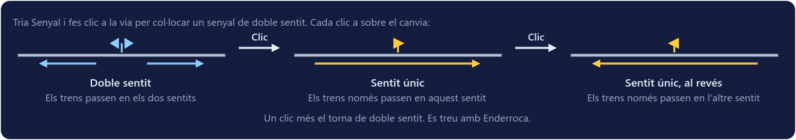

Senyals
Mantenir els trens separats.
Els senyals divideixen una línia en blocs perquè els trens s'esperin i no xoquin. Per començar no en necessites cap: els encreuaments i els apartadors ja mantenen separats els trens. Els senyals deixen que més trens comparteixin una línia amb molt de trànsit.
Posar senyals
- Tria Senyal (9) a Ferrocarril i fes clic en un tram de via. Cadascun costa 600 $.
- Els senyals van en via recta o diagonal, no en corbes, encreuaments, andanes ni passos a nivell.
- Fes clic un altre cop en un senyal per fer-lo de sentit únic, un altre cop per al sentit contrari i un més per a doble sentit.
- Els senyals es treuen amb Enderroca.


Cap on apunta?
- Amb Senyal triat, cada senyal mostra una fletxa a sobre: amb punta als dos extrems si és de doble sentit, i amb una sola punta si és de sentit únic, apuntant cap on poden passar els trens.
- El senyal sota el ratolí mostra en blanc com quedaria amb un clic, i la nota al costat del ratolí ho diu amb paraules.
- Sense l'eina, fixa't en els llums: un senyal de doble sentit té un llum a cada cara del pal; un de sentit únic en té un, mirant els trens que deixa passar.
Blocs
- La via entre dos senyals és un bloc. Un tren només passa un senyal quan el bloc següent és buit; si no, espera.
- Cada encreuament és un bloc propi, amb senyals o sense. Un tren només entra en un encreuament quan és lliure, i també la via per on en surt, fins al següent encreuament o senyal.
- Els trens només esperen als senyals i davant dels encreuaments. En altres llocs, els trens que van per la mateixa via xoquen entre ells: tots dos queden destrossats, amb tot el que porten, i les restes tallen la línia durant unes setmanes.
- Un senyal de sentit únic només deixa passar els trens en el seu sentit, i els trens planifiquen la ruta comptant-hi.
Accidents ferroviaris
- Quan dos trens xoquen, tots dos queden destrossats amb tot el que porten, i no es retorna res. Les notícies ho expliquen, i del lloc en surt fum durant uns dies.
- A un tren en un dipòsit no hi pot xocar ningú, ni a un que passa sota un pont que un altre tren està creuant. Els autobusos i els camions no xoquen mai.
- Durant el manteniment, els vagons que queden fora del dipòsit mantenen la via ocupada.
- Un accident a prop d'una població redueix la valoració municipal de cada empresa implicada. Consulta Ajuntaments.
- Per fer anar més d'un tren per una sola via, posa-hi apartadors on es creuen els trens.
Següent: Apartadors.